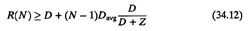
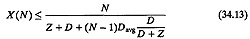
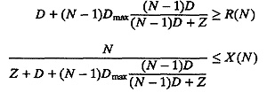
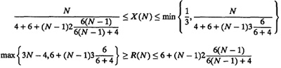

| Previous | Table of Contents | Next |
This balanced system has a better performance (higher throughput and lower response time) than that of the original unbalanced system. This observation leads us to the following bounds on the performance of the unbalanced system:

and

The expressions on the right-hand side are for the balanced system. This completes the second step of the derivation.
Now consider another experiment on the unbalanced system. All devices that have a demand equal to Dmax (same as the bottleneck) are removed from the set of devices to be considered for change. From the remaining set, we take the fastest device and the slowest device. Let us say that these are the devices numbered 1 and k, respectively. Ordinarily, k = M – 1 unless DM – 1 = DM, in which case we take the highest k such that Dk ≠ DM. We reduce the service demand on the fastest device by a small amount ΔD and increase that on the kth device by the same amount. The change in the fastest device would improve the performance slightly, but the change in the kth device would degrade the performance considerably. The net effect would be a decrease in performance. We continue this process until either the service demand on the fastest device is reduced to zero or that of the kth device reaches Dmax. Any device that has either zero demand or a demand equal to Dmax is removed from the set of devices to be changed. We select the fastest and the slowest devices from the remaining set and continue the experiment. At the end, we would have a balanced system in which M´ = D/Dmax devices have nonzero demands each equal to Dmax; the remaining devices have zero demands and can therefore be deleted from the system. Since every change degraded the performance, the performance of this new balanced system should be worse than that of the original unbalanced system. In other words,

The expressions on the left-hand side are for the balanced system.
Combining Equations (34.12), (34.13), (34.1), and (34.1) with asymptotic bounds we get the balanced job bounds.
The equations for the balanced job bounds are summarized in Box 34.4 and are illustrated by the following example.
Example 34.4 For the timesharing system of Example 34.2
The balanced job bounds (BJBs) are

The bounds are listed in Table 34.3 and are shown by broken lines in Figure 34.4. The exact throughputs and response times obtained in Example 34.2 are shown in the figures by solid lines.
|
Box 34.4 Balanced Job Bounds
|
| Previous | Table of Contents | Next |